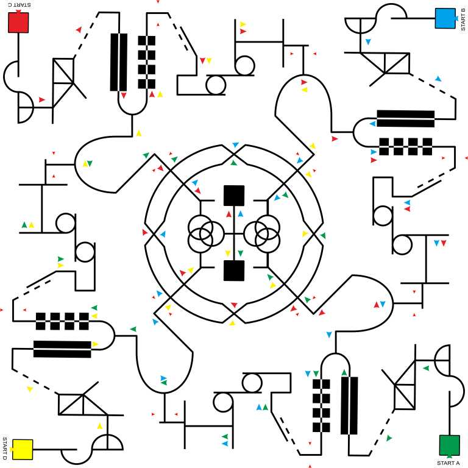

Kompetisi ini merupakan ajang adu cepat dan adu strategi robot dalam mengikuti garis sebagai lintasan. Line Follower Competition Technocorner hadir dengan tantangan dan peraturan yang lain daripada yang lain. Dalam lintasan akan dihadirkan sejumlah rintangan yang memiliki tingkat kesulitan tersendiri dan selalu memberikan keunikan di setiap tahunnya. Peserta juga harus mengatur strategi bermain mereka sendiri agar bisa mengalahkan tim lain sehingga kontestan akan selalu tertantang untuk kembali berpartisipasi di ajang lomba berikutnya.
Sasaran dan Jumlah Peserta Kegiatan
Peserta merupakan mahasiswa SI/D4/D3/D2/D1 khususnya. Namun, siswa SMA/Sederajat juga diperbolehkan mengikuti lomba. Kuota maksimal adalah 150 tim. Setiap tim terdiri dari 1 robot, maksimal 3 orang dari perguruan tinggi atau sekolah yang sama.
Pelaksanaan Lomba
Waktu
Sabtu – Minggu, 12-13 Maret 2016 pukul 07.00 WIB – selesai.
Tempat
- Arena Line Follower :
- Hari 1 : PKKH UGM
- Hari 2 : R.Utama GSP LT 1 UGM
- Pit Stop Kontestan :
- Hari 1 : Lt 2 PKKH/Hall PKKH
- Hari 2 : R.utama GSP LT 1 UGM
Track Penyisihan

File gambar bisa di unduh pada menu tab Download
Hadiah
Juara I : Uang sebesar 5.000.000 + trophy
Juara II : Uang sebesar 3.500.000 + trophy
Juara III : Uang sebesar 1.500.000 + trophy
Juara IV : Uang sebesar 1.000.000 + trophy
Best Design : Uang sebesar 750.000 + souvenir
Fasilitas Peserta
Makan siang, pin, sertifikat, penginapan* (*dengan ketentuan)
Contact Person
Rino : 085702550959
Ketentuan / Persyaratan Peserta
- Peserta masih berstatus sebagai mahasiswa dengan jenjang D1, D2, D3, D4 dan S1 dalam lingkup perguruan tinggi di seluruh Indonesia. Namun, siswa SMA/Sederajat juga diperbolehkan mengikuti lomba.
- Jumlah peserta (tim) dari tiap perguruan tinggi/sekolah tidak dibatasi.
- Setiap tim maksimal terdiri dari 3 orang yang berasal dari perguruan tinggi/sekolah yang sama.
- Setiap individu dan robot hanya diperbolehkan terdaftar pada satu tim.
- Pendaftaran (offline) dimulai pada tanggal 31 Januari 2016 dan paling lambat tanggal 29 Februari 2016 atau jika kuota terpenuhi.
- Semua administrasi pendaftaran dan pembayaran biaya pendaftaran online paling lambat tanggal 1 Maret 2016 melalui rekening bank yang telah ditentukan (oleh panitia) atau langsung.
- Penggantian anggota tim, revisi nama anggota dan tim harus dikonfirmasikan kepada panitia paling lambat tanggal 1 Maret 2016, jika tidak melakukan konfirmasi penggantian maka peserta yang bersangkutan tidak diakui. Kuota maksimal peserta terbatas, hanya untuk 150 tim.
Spesifikasi Robot
- Dimensi maksimal robot :
- Panjang : 20cm
- Lebar : 20cm
- Tinggi : 15 cm
- Direkomendasikan dimensi seminimal mungkin.
- Robot tidak diperkenankan menggunakan kit robot rakitan atau mainan seperti LEGO dan merk serupa dan harus merupakan hasil kreativitas tim sendiri. Pengecualian untuk mainan seperti TAMIYA, penggunaannya maksimal yang diperbolehkan hanya bagian ban, gearbox dan motor DC.
- Bobot maksimum robot adalah 3 kg (termasuk baterai).
- Fungsi utama robot adalah mengikuti jejak garis serta melewati rintangan pada track yang dipergunakan dalam perlombaan.
- Robot tidak boleh merusak permukaan lintasan.
- Robot tidak boleh membahayakan penonton, panitia dan atau robot tim lain.
- Robot bebas dari unsur eksplosif seperti bensin, butane, helium, dll.
- Robot berjalan secara otomatis tanpa bantuan operator atau sistem control lainnya.
- Robot membawa sumber energi sendiri.
- Robot menggunakan baterai maksimal 13 volt.
- Nama tim atau robot tidak diperkenankan mengandung unsur penghinaan, pelecehan dan yang dapat menyinggung perasaan orang lain.
- Jika terdapat nama tim atau robot yang sama, maka diutamakan yang telah menyelesaikan administrasinya lebih awal.
- Peserta hanya diperbolehkan menggunakan satu robot selama seluruh pertandingan.
- Poin-poin di atas otomatis berlaku sebagai peraturan yang wajib ditaati peserta dan apabila dilanggar akan dikenakan sanksi dari panitia.
Sistem Pertandingan
General
- Perlombaan akan diadakan selama 2 hari.
- Babak penyisihan dan BHabak 64 besar akan dilaksanakan pada hari pertama.
- Sedangkan hari kedua akan dilaksanakan babak 32 besar, 16 Besar dan final.
- Untuk hari kedua akan ada perubahan track. Track akan dipublikasikan setelah rangkaian acara hari pertama selesai.
- Saat registrasi robot akan di cek uji kelayakan antara lain:
- Pengecekan dimensi robot.
- Penimbangan berat robot.
- Pengukuran tegangan supply robot.
- Pengambilan foto.
- Setelah robot yang lolos dari uji kelayakan, akan mendapatkan tanda lolos uji kelayakan berupa stiker.
- Sebelum masuk arena pertandingan, tegangan supply robot akan dicek lagi. Apabila mencurigakan, akan dilakukan juga pengecekan dimensi dan penimbangan berat robot.
- Pada hari pertama, setiap pertandingan terdapat 4 robot yang akan bertanding secara bersamaan.
- Pada hari kedua, setiap pertandingan terdapat 4 robot yang akan bertanding secara bersamaan, terkecuali untuk babak final terdapat 2 robot yang akan bertanding.
- Pada setiap pertandingan akan dialokasikan waktu 3 menit untuk waktu pertandingan.
- Parameter yang akan dinilai pada pertandingan Penyisihan 64 Besar dan 64 Besar adalah waktu tempuh saat mencapai finish. Jika robot tidak mampu mencapai garis finish maka yang dinilai adalah jarak terjauh yang dilampaui robot .
- Sistem penilaian pada babak 32 Besar, 16 Besar adalah menggunakan point.
- Sistem penilaian Final menggunakan sistem point akan tetapi berbeda dengan babak 32 besar dan 16 besar.
- Ketentuan mengenai sistem point ada pada halaman tambahan.
- Sedangkan untuk best design, parameter yang akan dinilai adalah sebagai berikut:
- Kerapian
- Kreatifitas
- Inovasi
- Orisinalitas
- Hasil setiap pertandingan akan diupdate terus menerus dan dapat dilihat pada viewer yang disediakan oleh panitia.
- Keputusan juri tidak dapat diganggu gugat.
Babak Penyisihan 64 besar
- Keseluruhan tim akan dibagi menjadi 12 group yang isi setiap grup akan ditentukan dari hasil technical meeting.
- Masing-masing tim memiliki hak bertanding sebanyak 2 kali.
- Posisi start robot ditentukan dari hasil technical meeting. Untuk pertandingan selanjutnya posisi start tidak akan sama dengan posisi start pertandingan pertama.
- Penilaian merupakan hasil akumulasi dari 2 pertandingan.
- Penentuan tim yang lolos ke babak selanjutnya didasarkan pada 64 tim terbaik secara universal.
Babak 64 besar
- Masih menggunakan track yang sama.
- Untuk sistem pertandingan 64 besar menggunakan rangkingan poin.
- Tim yang lolos adalah tim yang berada pada rangking 32 besar secara universal.
- Masing-masing tim memiliki hak bertanding sebanyak 2 kali.
Babak 32 besar
- Pada babak ini tack yang digunakan adalah track baru.
- Untuk sistem pertandingan 32 besar menggunakan sistem ambil point pada track.
- Tim yang lolos adalah tim yang berada pada rangking 16 besar secara universal.
- Masing-masing tim memiliki hak bertanding sebanyak 2 kali.
Babak 16 besar
- Pada babak ini track yang digunakan sama dengan babak 32 besar.
- Untuk sistem pertandingan 16 besar menggunakan sistem ambil point pada track.
- Tim yang lolos adalah tim yang berada pada rangking 6 besar secara universal.
- Masing-masing tim memiliki hak bertanding sebanyak 2 kali.
Babak Final
- Pada babak ini track yang digunakan sama dengan babak 16 besar tetapi ada beberapa tambahan yang akan diberitahu pada saat pengumuman tim yang lolos ke final.
- Masing-masing tim memiliki hak bertanding sebanyak 4 kali.
- Juara akan ditentukan dengan sistem point yang ada pada bagian general sistem pertandingan.

Biaya Pendaftaran
Biaya pendaftaran lomba adalah Rp 180.000,00/tim
Waktu Pendaftaran
Tanggal : 14 Desember 2015 – 29 Februari 2016 (Online)
Tanggal : 31 Januari 2015 – 29 Februari 2016 (Offline)
Alur Pendaftaran
- Buka link http://ugm.id/TechnocornerLF
- Kemudian isi formulir pendaftaran* dengan benar dan klik SUBMIT
- Download template registrasi di link berikut Formulir Pendaftaran
- Didalam template registrasi yang telah diunduh terdapat informasi tim, identitas diri peserta yang harus diisi dengan benar
- Membayar biaya pendaftaran sebesar Rp. 180.000,- ke rekening 137-00-1192262-8 atas nama Fiha Febiala (Bank Mandiri).
- Atau pembayaran dapat dilakukan langsung di Lobi Departemen Teknik Elektro dan Teknologi Informasi Fakultas Teknik, Universitas Gadjah Mada dengan alamat Jalan Grafika No. 2 Kampus UGM, Yogyakarta mulai tanggal 1 – 7 Februari 2016 pada jam kerja.
- Menyiapkan berkas pendaftaran untuk diletakkan pada template registrasi, yaitu:
- Pas foto 3x4 masing-masing peserta
- Scan Kartu Tanda Pelajar masing-masing peserta
- Scan Kartu Identitas Guru Pembimbing
- Scan bukti pembayaran
- Template registrasi yang telah diunduh dan diisi tersebut dikonversi ke file ekstensi .pdf dengan nama REGISTRASI_LFC_NAMA TIM.pdf
- Kemudian file diupload di http://ugm.id/Technocorner2016upLF
- Jika berkas telah sesuai persyaratan dan lengkap, peserta akan mendapatkan email konfirmasi bahwa sudah terdaftar sebagai peserta kompetisi Technocorner.
*Dilarang menggunakan kata-kata yang mengandung hinaan, provokasi dan SARA dalam penggunaan nama tim. Panitia memiliki hak sepenuhnya untuk menentukan apakah berkas sesuai dengan persyaratan atau tidak.

Digunakan untuk verifikasi pendaftaran online. Isi form ini sesuai dengan data tim dan upload ke http://ugm.id/Technocorner2016upLF
File Petunjuk Teknis LFC

File dalam format .jpg, file dengan format .cdr akan diberikan kepada peserta melalui email setelah mendaftar.